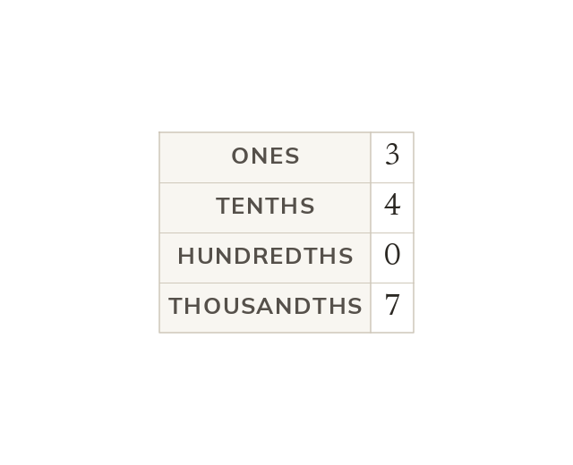

Places after the point
Each place after the point is worth a tenth of the one before. A digit's value is set by its place. In 3.407, the 4 is 4 tenths.
Each place to the right of the decimal point is worth a tenth of the place before: tenths, hundredths, thousandths. A digit's value is set by its place, not by how many digits follow it.